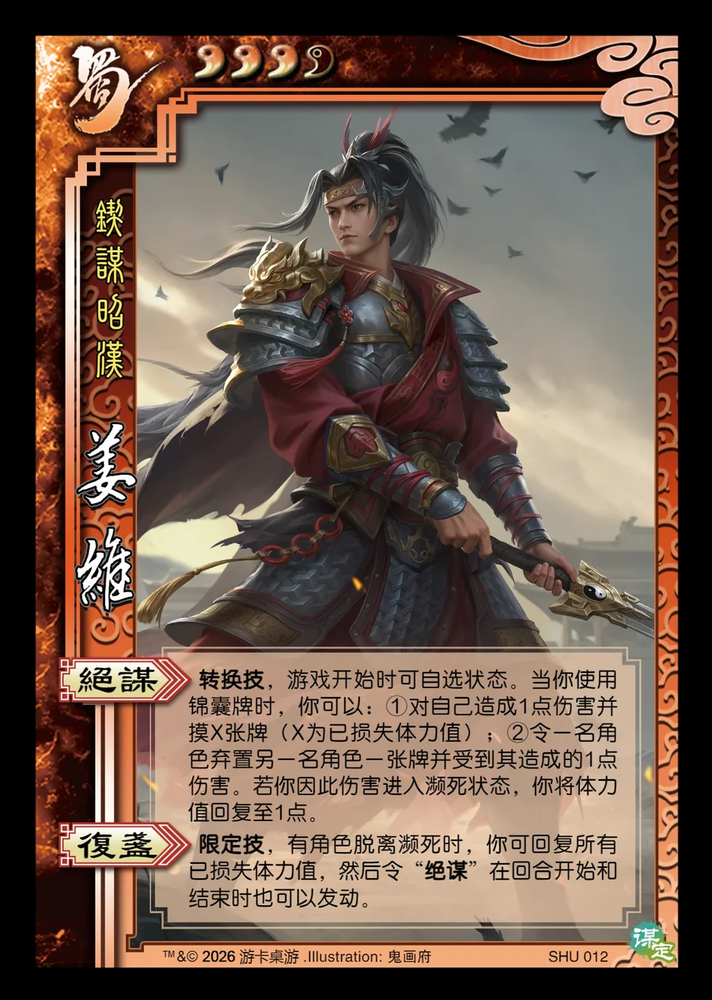

点击卡面查看大图
蜀
谋姜维
♥3/4锲谋昭汉
绝谋转换技
转换技，游戏开始时可自选状态。当你使用锦囊牌时，你可以：①对自己造成1点伤害并摸X张牌（X为已损失体力值）；②令一名角色弃置另一名角色一张牌并受到其造成的1点伤害。若你因此伤害进入濒死状态，你将体力值回复至1点。
复盏限定技
限定技，有角色脱离濒死时，你可回复所有已损失体力值，然后令“绝谋”在回合开始和结束时也可以发动。

点击卡面查看大图
锲谋昭汉
转换技，游戏开始时可自选状态。当你使用锦囊牌时，你可以：①对自己造成1点伤害并摸X张牌（X为已损失体力值）；②令一名角色弃置另一名角色一张牌并受到其造成的1点伤害。若你因此伤害进入濒死状态，你将体力值回复至1点。
限定技，有角色脱离濒死时，你可回复所有已损失体力值，然后令“绝谋”在回合开始和结束时也可以发动。